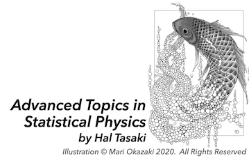

Japanese version / Hal Tasaki's online lectures / Hal Tasaki's YouTube channel
/ Hal Tasaki's main web page
Advanced Topics in Statistical Physics by Hal Tasaki
This is a collection of (more or less independent) graduate-level mini-courses on theoretical/mathematical statistical physics. There are currently two mini-courses on classical systems and one on quantum systems, but I hope the page will expand further. You can download all slides. The material here is partly based on a graduate course that I gave at Gakushuin University.
I wish to thank Mari Okazaki for allowing me to use her fantastic illustration, which was initially drawn for my book.
Proof of the existence of a phase transition in the two-dimensional Ising model (August 2025)
The Ising model (more properly, the Lenz-Ising model), an idealized model of a ferromagnet, is a standard subject in classical statistical mechanics and provides an ideal setting for deeply understanding and studying phase transitions in systems with infinitely many degrees of freedom.
Here, we give a rigorous proof that the most basic version --- the two-dimensional ferromagnetic Ising model --- exhibits a phase transition.
In Part 1, we explain the background and motivation. In Part 2, we fully define the model and state the main theorems.
In Part 3, we prove that the free energy density has a well-defined infinite-volume limit, independent of the choice of boundary conditions. The spontaneous magnetization is then defined as the right-derivative of the free energy density—this is the most canonical, thermodynamically grounded definition of spontaneous magnetization.
Then, in Part 4 and Part 5, by introducing two different stochastic-geometric representations of the model, we prove the two key results of this mini-course: that the spontaneous magnetization vanishes at sufficiently high temperatures, and that it is strictly positive at sufficiently low temperatures --- that is, the free energy density is non-differentiable.
We assume a basic familiarity with statistical mechanics, in particular with the definition and use of the canonical ensemble, but no other specialized background is required. All necessary facts will be explained and proved as needed.
As for mathematics, only an elementary understanding of analysis and standard set-theoretic notation is assumed.
Lectures
Playlist in YouTube
Main references
Related references
The absence of ferromagnetic order in the two-dimensional XY model (August 2025)
The classical XY model serves as a model for certain types of anisotropic magnets and also as an effective model for superconductors and superfluids.
From a theoretical standpoint, it is regarded as the simplest spin system with continuous symmetry.
Spin systems with continuous symmetry exhibit behavior that is fundamentally different—especially in two dimensions—from that of systems with discrete symmetry, such as the Lenz-Ising model.
In fact, the two-dimensional XY model is known to exhibit an “exotic” phase transition called the Kosterlitz-Thouless (KT) transition.
The main aim of this mini-course is to introduce two key results: Wegner's harmonic approximation, which gives an approximate description of the low-temperature behavior of the XY model, and the McBryan-Spencer theorem, which shows that the outcome of this approximation provides rigorous upper bounds on correlation functions (and magnetization).
In Part 1, I begin by spending some time discussing general aspects of phase transitions in classical spin systems related to the main subject --- namely, the Ising model, the XY model, and the Heisenberg model.
Part 2 gives a brief but precise formulation of the XY model.
Part 3 is devoted to a careful exposition of Wegner's harmonic approximation. This is a bold approximation scheme, but I provide a step-by-step account of the calculations, which makes this part rather long.
Part 4 is the core of the mini-course: a proof of the McBryan-Spencer theorem. The theorem is powerful, yet its proof is remarkably simple. I would say it is almost magical!
Part 5, which can be regarded as an appendix, presents a proof based on the random current representation that the correlation function decays exponentially at high temperatures.
Although supplementary, this part has its own charm.
We assume a basic familiarity with statistical mechanics, in particular with the definition and use of the canonical ensemble, but no other specialized background is required. All necessary facts will be explained and proved as needed.
As for mathematics, only an elementary understanding of analysis and standard set-theoretic notation is assumed.
Lectures
Playlist in YouTube
Main references
-
F. Wegner, Spin-Ordering in a Planar Classical Heisenberg Model, Z. Phys. 206: 465-470 (1967).
-
V.L. Berezinskii, Destruction of long-range order in one-dimensional and two-dimensional systems having a continuous symmetry group i. classical
systems. Soviet Journal of Experimental and Theoretical Physics, 32: 493-500, (1971).
-
P.C. Hohenberg, Existence of Long-Range Order in One and Two Dimensions,
Phys. Rev. 158: 383 (1967).
-
N.D. Mermin and H. Wagner,
Absence of Ferromagnetism or Antiferromagnetism in One or Two-Dimensional Isotropic Heisenberg Models,
Phys. Rev. Lett. 17: 1133 (1966); Erratum Phys. Rev. Lett. 17: 1307 (1966).
-
O.A. McBryan and T. Spencer,
On the decay of correlations in SO(n)-symmetric ferromagnets,
Comm. Math. Phys. 53: 299-302 (1977).
Related references
-
Topological Phase Transitions and Topological Phases of Matter (Scientifc Background on the Nobel Prize in Physics 2016)
-
J. M. Kosterlitz and D. J. Thouless, Long range order and metastability in
two dimensional solids and superfluids.(Application of dislocation theory),
Journal of Physics C: Solid State Physics, 5(11): L124, 1972.
-
J. M. Kosterlitz and D. J. Thouless, Ordering, metastability and phase
transitions in two-dimensional systems. Journal of Physics C: Solid State
Physics, 6(7):1181, 1973.
-
J. Fröhlich and T. Spencer,
The Kosterlitz-Thouless transition in two-dimensional abelian spin systems and the Coulomb gas, Comm. Math. Phys., 81 (4): 527--602 (1981).
-
J. Fröhlich, B. Simon, and T. Spencer,
Infrared bounds, phase transitions and continuous symmetry breaking, Comm. Math. Phys. 50(1): 79-95 (1976).
-
R. B. Griffiths, Spontaneous Magnetization in Idealized Ferromagnets, Phys. Rev. 152: 240--246, 1966.
-
T. Koma and H. Tasaki, Classical XY Model in 1.99 Dimensions, Phys. Rev. Lett. 74: 3916-3919 (1995).
-
H. Tasaki, Physics and Mathematics of Quantum Many-Body Systems,
Graduate Texts in Physics (Springer, 2020).
Long-range order and spontaneous symmetry breaking in quantum spin systems and hard-core bosons on a lattice (September 2026)
There are two basic concepts used to characterize order in many-body systems (here I mean conventional forms of order that have been studied since the twentieth century, rather than, for example, topological phases): long-range order (LRO) and spontaneous symmetry breaking (SSB).
LRO and SSB are, of course, deeply related, but the relation between them is not straightforward.
In particular, in models where the Hamiltonian does not commute with the order operator, it is quite common that the ground state (in the usual sense of an eigenstate corresponding to the lowest eigenvalue of the Hamiltonian) exhibits LRO but no SSB.
In such a situation, one can construct "macroscopic ground states" that exhibit full SSB by taking suitable superpositions of low-lying states.
In this mini-course, we begin with the transverse-field Ising model, where this story can be seen most transparently, and then turn to the quantum XY model with continuous U(1) symmetry and to a system of hard-core bosons on a lattice.
In these settings, we review the theory of Koma and Tasaki concerning LRO, SSB, and low-lying states.
We shall also see that the answer to the question "Can a ground state with LRO but without SSB be physically realized?" is different for spin systems and bosonic systems.
Understanding this subject also gives clear answers to some standard questions that naturally arise after learning the BCS theory of superconductivity or Bogoliubov theory of BEC:
(1) Why are superconducting states and BEC states often represented by superpositions of states with different particle numbers?
(2) Are superconductivity and BEC impossible in a state with a fixed particle number?
(3) Does the occurrence of superconductivity or BEC imply fluctuations in the particle number?
(A note for impatient readers: the answers are, roughly, (1) because such a description is theoretically convenient, and perhaps even natural, but it is not necessary; superconductivity and BEC can also be described in states with a fixed particle number, (2) no, they occur perfectly well at fixed particle number, and (3) in a single isolated system the particle number is conserved and therefore does not fluctuate; the situation is different when two or more systems are brought into contact.)
In Part 1, after giving a very rough overview of the goal of the course, we introduce the notation that will be used throughout.
In Part 2, as a warm-up, we discuss the relation between LRO and SSB in low-temperature equilibrium states of the classical Ising model.
Part 3 is where the main subject begins.
We first examine the ground state and the first excited state of the transverse-field Ising model, where the essential story is almost obvious, and then introduce the more general theory of Horsch and von der Linden.
In Part 4, we study the quantum XY model with U(1) symmetry.
Building on the results of Kennedy, Lieb, and Shastry and of Kubo and Kishi, which establish LRO in the ground state in two and higher dimensions, we review, without proofs, the rigorous results of Koma and Tasaki on low-lying states (Anderson's tower of states) and on states exhibiting full SSB.
In Part 5, we change perspective and consider hard-core bosons on a lattice.
Mathematically, this model is completely equivalent to the quantum XY model discussed in Part 4.
The physical interpretation of the state space, however, is different, and this changes the physical meaning of a ground state that exhibits LRO but no SSB.
Lectures
Playlist in YouTube
References
-
Tohru Koma and Hal Tasaki, "Symmetry Breaking and Finite Size Effects in Quantum Many-Body Systems", Journal of Statistical Physics 76, 745-803 (1994). (ArXiv version)
-
Hal Tasaki, "Long-range order, "tower" of states, and symmetry breaking in lattice quantum systems", Journal of Statistical Physics 174, 735-761 (2019). (ArXiv version)
-
Hal Tasaki, "Spontaneous symmetry breaking in coupled Bose-Einstein condensates", Journal of Statistical Physics 178, 379-391 (2020). (ArXiv version)
Integrable and non-integrable quantum spin chains (March 2025)
In this mini-course, I discuss two interesting topics on the S=1/2 XY quantum spin chain.
One is the well-known 1961 work by Lieb, Schultz, and Mattis, which showed that the model (without a magnetic field in the X-direction) can be solved exactly by mapping to free fermion models.
The other is a relatively new work that shows the opposite is true for the same model with a nonzero magnetic field in the X-direction.
By extending Shiraishi's work in 2019, Yamaguchi, Chiba, and Shiraishi proved in 2024 that the model possesses no nontrivial local conserved quantities, which fact strongly suggests that the model is "non-integrable."
The present mini-course is almost self-contained.
I only assume basic knowledge of quantum spin angular momenta and elementary facts about many-fermion systems described in the standard wave-function formalism.
In particular, I do not assume knowledge of the formulation of many-body quantum mechanics in terms of annihilation/creation operators (a.k.a. second quantization).
Lectures
Playlist in YouTube
Main references
-
E. Lieb, T. Schultz, and D. Mattis, Two soluble models of an antiferromagnetic chain, Ann. Phys. 16:
407--466 (1961).
-
N. Shiraishi,
Proof of the absence of local conserved quantities in the XYZ chain with a magnetic field,
Europhys. Lett. 128: 17002 (2019).
-
N. Shiraishi,
Absence of Local Conserved Quantity in the Heisenberg Model with Next-Nearest-Neighbor Interaction,
J. Stat. Phys. 191: 114 (2024).
-
M. Yamaguchi, Y. Chiba, and N. Shiraishi,
Complete Classification of Integrability and Non-integrability for Spin-1/2 Chain with Symmetric Nearest-Neighbor Interaction,
(preprint, 2024).
-
M. Yamaguchi, Y. Chiba, and N. Shiraishi,
Proof of the absence of local conserved quantities in general spin-1/2 chains with symmetric nearest-neighbor interaction,
(preprint, 2024).
Related references
The origin of ferromagnetism and the Hubbard model (September 2026)
In a ferromagnetic material, a huge number of spins interact with each other and develop magnetic order in which the spins align collectively.
Understanding the origin of the interactions between spins that give rise to magnetic order has been a long-standing problem in condensed matter physics.
In 1928, Heisenberg proposed the picture of the "exchange interaction," in which magnetic interactions arise from the fact that electrons are fermions and interact with each other through the Coulomb interaction.
This marked the starting point of the modern quantum theory of magnetism.
The Hubbard model is a standard, though highly idealized, model for describing strongly interacting electrons in solids.
It describes electrons in a tight-binding system and incorporates short-range Coulomb interactions.
The Hubbard model was originally studied in the early 1960s mainly in an attempt to understand the origin of ferromagnetism, but it was later found to be capable of describing a wide range of phenomena, including antiferromagnetism, ferrimagnetism, Mott insulators, and even superconductivity.
In this mini-course, we return, in a sense, to the original motivation and take a somewhat detailed look at rigorous results on the emergence of ferromagnetism in the Hubbard model.
After a brief discussion of the background and history in Part 1, we study the exchange interaction in detail in Part 2, using a system of two electrons as our setting.
At this stage, however, we use only ordinary quantum mechanics based on wave functions and do not yet introduce the Hubbard model.
In Part 3, we define the Hubbard model in a general setting and discuss some basic results and simple examples.
Although this point is not emphasized very much in the lectures, it should be noted that the formulation using creation and annihilation operators is completely equivalent to ordinary many-particle quantum mechanics based on wave functions (see the reference "Introduction to the 'second quantization' formalism for non-relativistic quantum mechanics" below).
In Part 4, we discuss Nagaoka ferromagnetism, the first rigorous example of ferromagnetism in the Hubbard model.
In Part 5, after briefly reviewing Lieb's ferrimagnetism and Mielke's flat-band ferromagnetism, we give a somewhat more detailed account, including a proof, of Tasaki's (that is, my own) flat-band ferromagnetism.
Two mathematical appendices are included.
In Appendix 1, we introduce and prove the Perron-Frobenius theorem for real symmetric matrices.
In Appendix 2, we prove the uniqueness and positivity of the ground state of a Schrodinger equation in arbitrary dimensions, which may be regarded as the counterpart of the Perron-Frobenius theorem.
Lectures
Playlist in YouTube
Related references